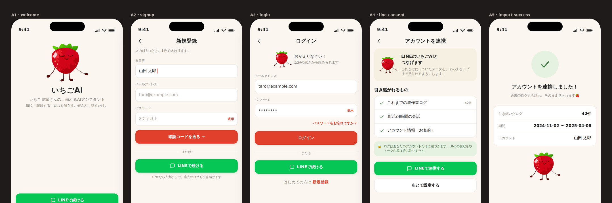
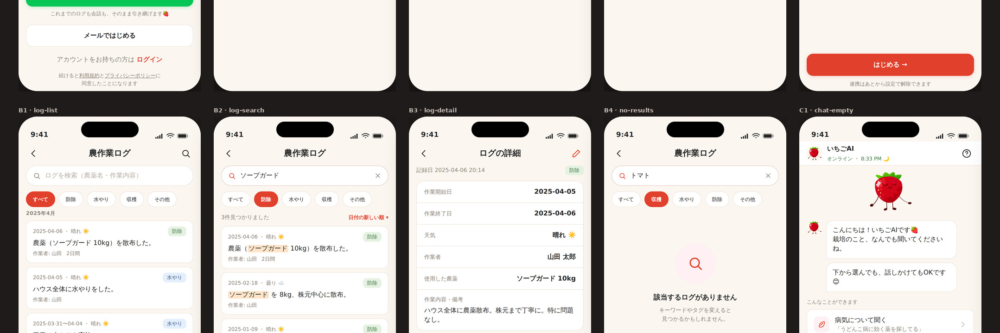
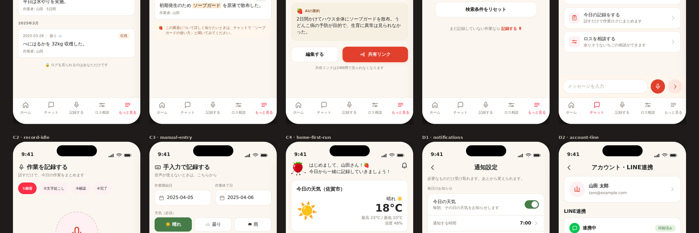
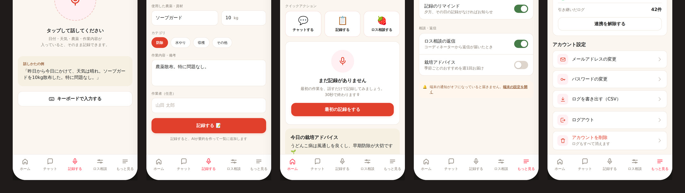

Voice as the primary input
A form is easier to build and easier to validate. But the person filling it in is wearing gloves. Speech-to-log costs more engineering and is the only version that gets used.
A Japanese-language AI assistant for strawberry farmers — designed for someone standing in a greenhouse with wet gloves, not sitting at a desk.
Farm software usually assumes a desk, a keyboard and a free afternoon. The reality is a grower in a greenhouse, hands occupied, wanting to record what they just did in under thirty seconds. Every decision in this product follows from that.
Work logging is the task growers most need and least want to do. A form with a date picker, a dropdown and four text fields is technically complete and practically never filled in.
The audience was already using an existing LINE-based version. Asking them to start over in a new app — losing months of logs — would have lost most of them at the first screen.
Voice first. The grower speaks a sentence — the date, the weather, the chemical, the amount — and the assistant turns it into a structured log entry. Typing is the fallback, not the default.
Account linking imports the existing history and says exactly what is coming across: 42 logs, the date range, the account name, and a plain statement that friends and chat contents are not read.
A form is easier to build and easier to validate. But the person filling it in is wearing gloves. Speech-to-log costs more engineering and is the only version that gets used.
The consent screen lists the record count, the date range and what is explicitly not read. Vague permission requests get declined by people who have any doubt — and agricultural records are a business's history.
Each entry carries a short generated summary of what was done and why. It makes a long list scannable months later, when the grower is looking for what they sprayed and when.




